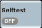

Selftest Control Softkeys
The selftest is turned on or off using the ON | OFF or RESTART | STOP keys. The measurement control softkey shows the current measurement state.

A profile is a particular selftest configuration that you store for later reuse. The profile contains all enabled selftests together with their user-defined parameters (if there are any) and the "Selftest Configuration" parameters.